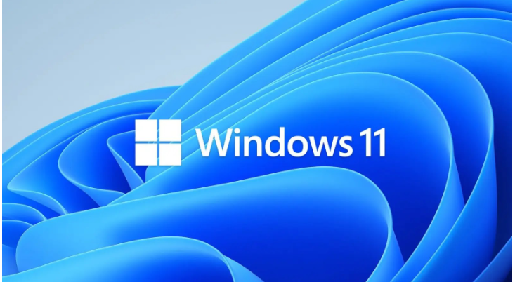

New Windows 11 KB5074109 Update Breaks Systems – Microsoft Asks Users to Remove Update
 Microsoft’s January 2026 Windows 11 security update KB5074109 has triggered multiple system stability issues, including lockups and black screens, prompting users to uninstall it. Reports highlight graphics regressions and app failures affecting both consumer and enterprise setups.KB5074109 targets Windows 11 versions 24H2 (build 26200.7623) and 25H2 (build 26100.7623), delivering over 100 security fixes, including three zero-days, alongside non-security improvements like NPU power optimization Released on Patch Tuesday, January 13, 2026, it includes servicing stack update KB5071142 and AI components for Copilot+ PCs. Microsoft simplified update titles in this release for clarity.
Microsoft’s release health dashboard lists ongoing unresponsive apps with cloud-backed storage as confirmed, recommending developers contact or PST relocation from OneDrive.
A prior lock screen password icon glitch affects enterprises, mitigated via Known Issue Rollback (KIR) Group Policy. No broad consumer rollback advisory exists, but enterprise admins deploy KIR for select regressions.